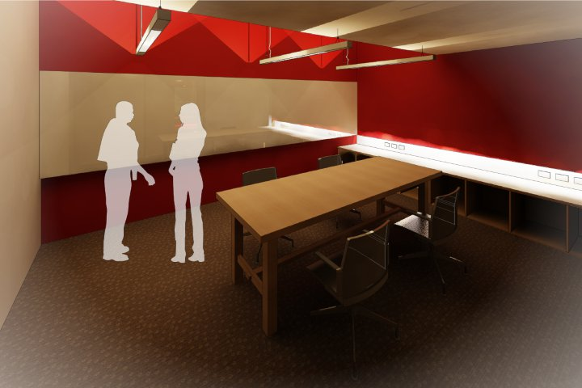
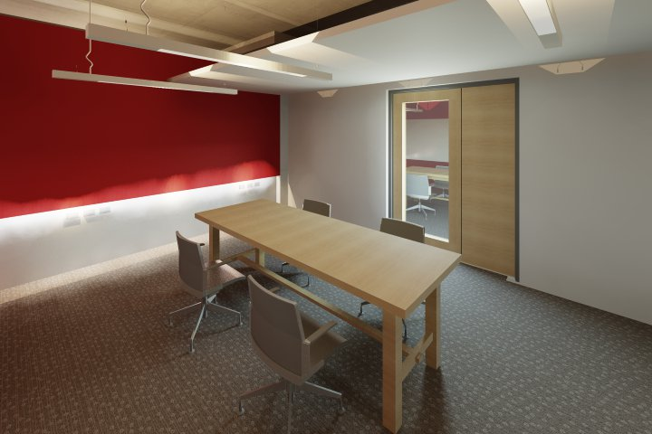
The fit out was the second phase of a ground floor refurbishment previously carried out by Architectus Brisbane. Similar in nature to the first phase, the project transformed 500m² of classroom space into an open concept learning environment.
Presented with a modest budget of $500,000 the primary strategy was to utilise as much of the existing cast concrete structure beneath plasterboard and acoustic ceiling finishes. To complement the rustic nature of the off form concrete, additional acoustic treatment was strategically added to new wall and ceiling finishes.
Tasked with providing a loose fitting spatial division for student study, rooms were created that provided both informal and more formal space. Two lounge spaces with soft seating and three classrooms were programmed into the design. Both informal and formal spaces were outfitted with an abundance of electrical and IT infrastructure to facilitate student communication.
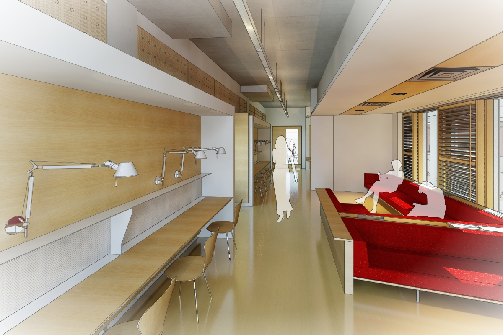


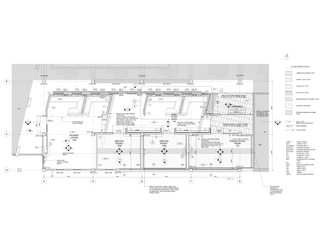
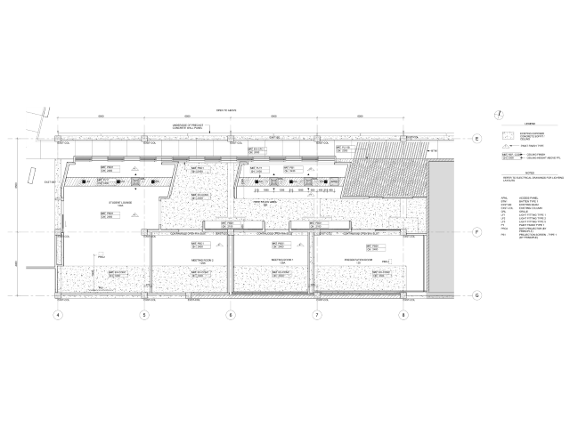
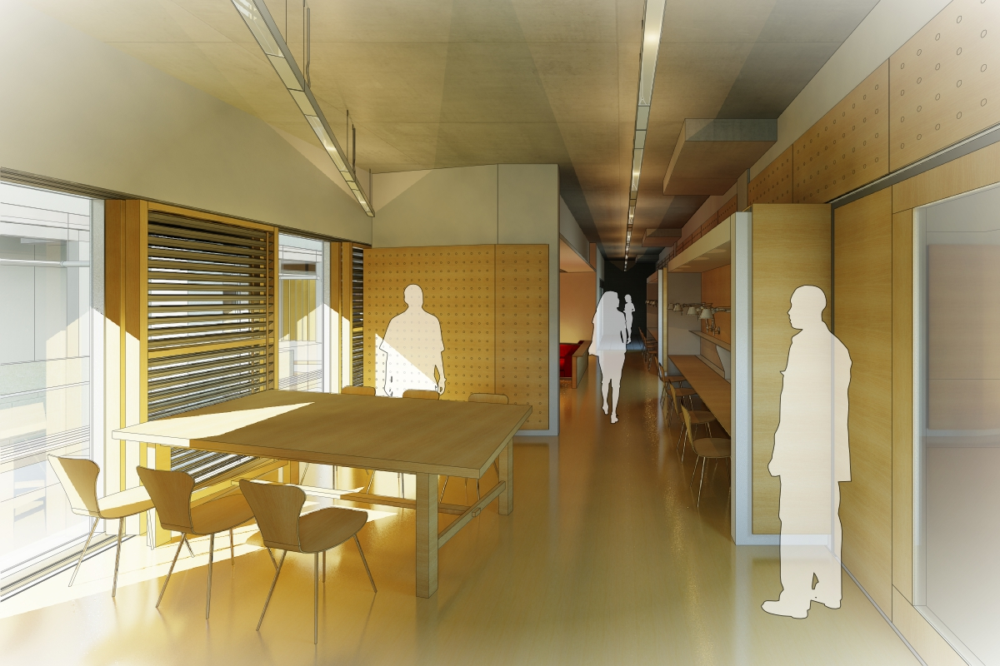
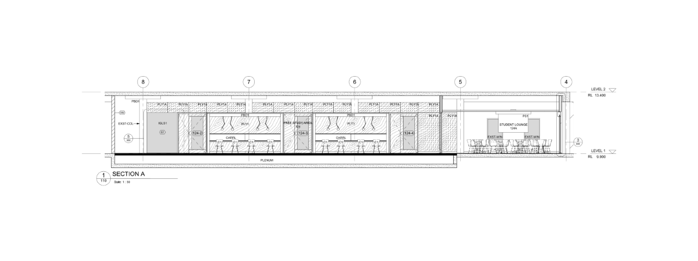
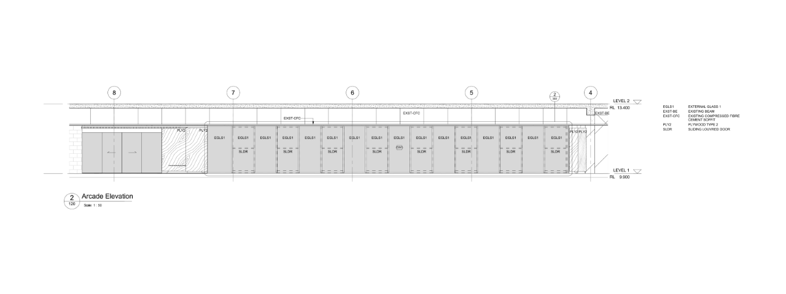
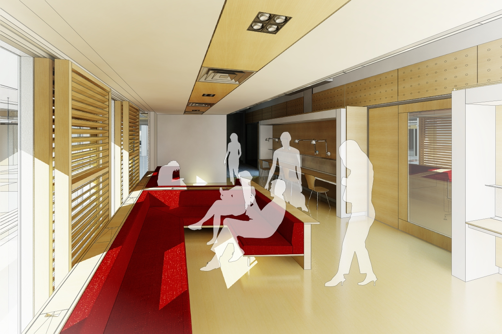
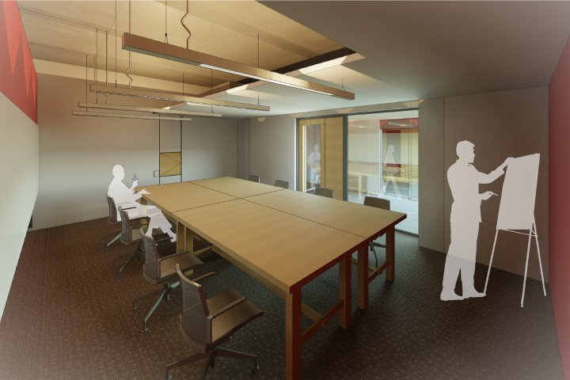
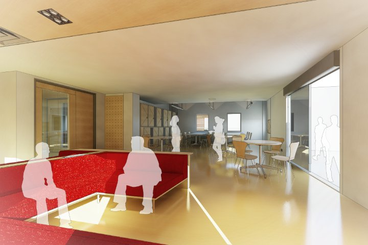
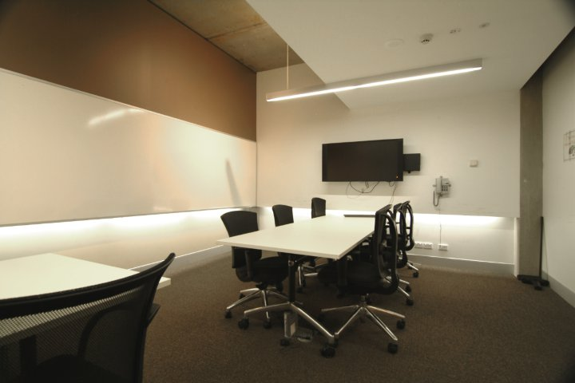
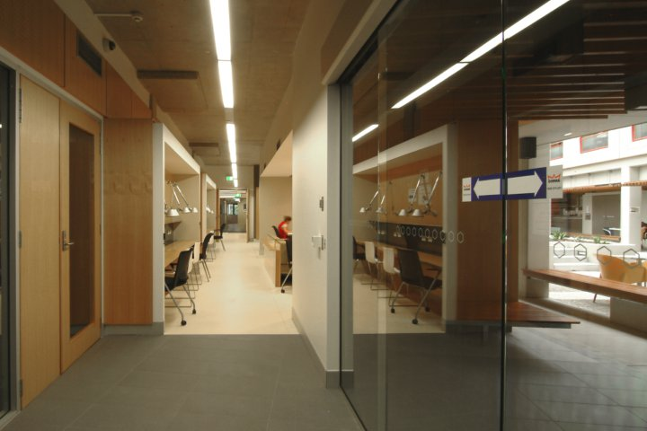